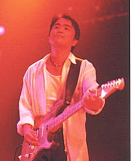

日浦孝則

立ち位置：右
| 誕生日 | 1960年1月17日 |
|---|---|
| 出身地 | 広島県 |
| 血液型 | B型 |
| 星座 | 山羊座 |
| 備考 | — |
瀬戸内海の小島に生まれる。人口500人、公共施設は小学校だけという自然豊かな環境で育ち、少年時代はミカン山で洋楽を聴いて過ごす。中学でギターを手にし、変声期の声の変化を経て、ニューミュージックに導かれる。
高校時代にバンド活動、関西の大学へ進学後はプロギタリスト志望として活動。25歳で上京し、レコード会社持ち込みを経て、テイチクから一度ソロデビュー。2度目の挑戦でclass結成に至る。